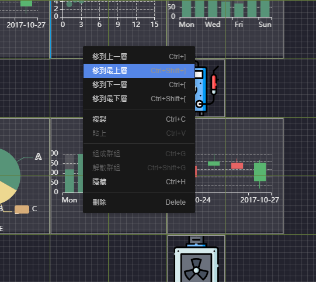

[作品筆記] sketch-builder 雲端原型工具開發筆記(04) - 功能開發
功能開發
這次主題主要是開發原型設計工具，並參考sketch作為主要臨摹對象，在上篇 “(03)開發的目標與介面設計” 已經提到相關UI的設計將會使用印度設計師的作品之後，這一篇要開始嚕一個原型工具出來。
先簡單列點需要開發的大項目，會再針對各項目進行簡單的探究。
更深入的邏輯有興趣的話當然可以pm我本人，不過核心的資料結構操作如果有機會，我是更想要能夠貢獻於目前任職的工作開發項目上面，因此只會列點提示使用的框架與開發的精神。
需開發的項目
畫布核心
- 移動 縮放
- 多元件選取
- 選取移動
- 選取縮放
- 選取對齊
- 對齊線
- 移動對齊線
- 同儕對齊線
- 縮放對齊線
- 尺規行為
- 十字線
- 拖曳移動
- 畫布尺寸
- 縮放功能
- 各動作的scale運算
- context menu
圖層
- 拖曳移動
- 群組間各節點移動
- rename行為
- 控制畫布核心行為
- context menu
元件
- svg元件
- chart 元件
export畫布
Keyboard Shortcuts
畫布功能
畫布核心主要是fork 老牌的vue拖曳縮放元件: vue-draggable-resizable
主要他能提供不錯的基底，當然fork下來改造還是花了不少心力，尤其是與其他事件整合上面，例如對齊線與縮放和尺規行為等等。
1. 群組化
主要是參考sketch的資料結構，於第二篇 “(2)sketch資料結構分析” 效法內容裡面的儲存邏輯，不過這邊暫時沒有讓使用者能夠無限群組，對於樹形的遍歷來說，無限制深度的結構會影響蠻多效能的，基於想要提供多選移動及縮放，暫時將節點深度鎖在level 2。
2. 多選
多選的核心為selectionjs
多選主要就是基於dom操作下的節點運算，每次選擇當下的滑鼠移動，都將進行一次區域的判定。
基於多方嘗試後，增加效能的作法就是仰賴dom操作的api evt.target的判定方式，這邊就點到為止。
多選的功能加入後，理應當支援的就是多選後的縮放，移動與對齊。
縮放與移動是類似的行為，多個同儕的dom節點不支援拖曳功能，你想要進行滑鼠的運作是不可能的。
當然這句話有例外:
參考文件 https://developer.mozilla.org/zh-CN/docs/Web/API/HTML_Drag_and_Drop_API/Multiple_items
但…只有基於Gecko的Mozilla Firefox支援multi drag api，我們開發總不能讓大部分的瀏覽器都不能用吧…。
所以這條路當然是不通的。
換句話說，如果你想要一次移動多個節點，但你只能針對一個節點進行移動，這不就代表你要用一個來表示全部的節點嗎?
朝這個思路進行解決多選的行為就簡單了
- 選取後建立虛擬節點壓在全部節點之上
- 動態計算其boundary
- 移動或縮放虛擬節點將一併運算各個選取的節點
這樣就大致完成多選移動縮放的邏輯。
3. 對齊線
簡單來說就是將吸附功能做進去，並顯示出來
for ( comp in allComps)
if( deltaXY <= tolerant )
newXY = compXY
類似這樣的邏輯思路。
不過困難點會在於需要實現不同的對齊線吸附
- 移動對齊線
- 同儕對齊線
- 縮放對齊線
4. 尺規行為
這邊主要參考 react ruler 的vue版本
https://github.com/daybrush/ruler/tree/master/packages/react-ruler
https://github.com/daybrush/ruler/tree/master/packages/vue-ruler
而十字線部分關於dom效能的運作 這一篇給了很好的思路
因此實作主要使用
target.getBoundingClientRect();
api進行Dimension的取得。
5. 縮放
縮放其實沒有什麼特別的，就是算數學。但在實作上 對於任何的dom dimension運算都要額外進行scale的運算，因此基於DRY原則(Don’t repeat yourself)下，如何將結構寫好才是需要注意的地方。
主畫面的縮放使用transform: scale(${this.scale})
6. context menu
context menu 我自己是覺得是web與應用程式的差異中微妙的界線，當web上面支援context menu的使用，才能說自己是應用程式(我自己的認為啦…)。
這邊是fork v-contextmenu 進行二次開發
https://github.com/heynext/v-contextmenu
裡面的功能主要就是store 資料流的操作。
圖層
fork vue-tree-list 與 v-contextmenu 進行二次開發
https://github.com/ParadeTo/vue-tree-list
https://github.com/heynext/v-contextmenu
這邊的功能其實就是一個很完整的大功能了，目前完成的部分還有很多feature可以添加，礙於版本篇幅就先用相對簡單的處理完成第一版本。
此版本主要提供功能為
- 拖曳移動
- 群組間各節點移動
- rename行為
- 控制畫布核心行為
- context menu
元件
元件的部分目前僅有提供
- svg元件
- chart 元件
chart 是apache基金會的echart
export畫布
Keyboard Shortcuts
提供
- ctrl+] 移到上一層
- ctrl+shift+] 移到最上層
- ctrl+[ 移到下一層
- ctrl+shift+[ 移到最下層
- ctrl+c 複製
- ctrl+v 貼上
- ctrl+g 組成群組
- ctrl+shift+g 解散群組
- ctrl+h 隱藏
- ctrl+shift+h 顯示
- delete 刪除
- ctrl+z 復原
- ctrl+y 重作
- space+mouse pan 畫布移動
小結
整體的資料結構邏輯來說，都與畫布核心的連動關係有關，因此開發途中會遇到一職需要重新封裝的狀態，最後索性都丟給store去處理。
都給store去處理的好處就是各封裝元件只有需要專心處理自己的prop就好，其他部分就trigger一個action請store去重新運算。
簡單開發的筆記就寫到這邊，未來如果功能持續更新再來跟大家分享。
陸續更新:
sketch-builder 雲端原型工具:
https://mike-zheng.github.io/sketch-builder
雲端原型工具開發筆記系列文